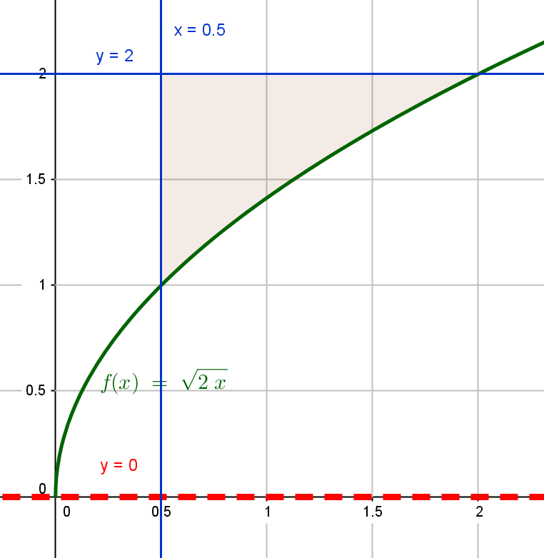

Eje de Rotación
Una vez identificado el área de rotación, se deberá identificar el eje alrededor del cual girará la misma.
Para los métodos que serán abordados, puede ser tomado como eje de rotación ya sea los ejes coordenados (eje x, eje y) o rectas paralelas a estos, ejemplos x=a, y=b.
Seleccionar un eje u otro influye radicalmente en la forma del sólido generado como veremos en el siguiente apartado.

eje x como eje de revolución